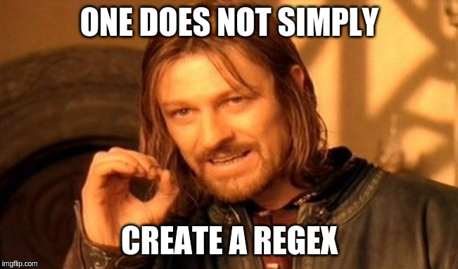

Elm Rex
Elm Rex
An experience with mixed results
Plan
- What is Elm
- The app
- How Elm fares
- Q/A
Developed at NoRedInk

Benevolent dictator
- Slow
- Erratic roadmap
- Coherent
- Quality
- Strong opinions
Elm Compiles to JS
Comprehensive


A functional language
- Functions are idempotent
- No side-effects
- No runtime errors
- Semver is imposed
- A helpful compiler
- Functions are curry-able
Helpful compiler


A sound type-system
- Strong
- Structural
- No null
- Implicit OR explicit
Records
type alias Person = { name: String, dob: Date }
-- Explicit typing
getAge : Person -> Int
-- Implicit typing
getAge { dob } = ...
-- Semi-implicit typing
getAge : { whatever | dob: Date }
Union types
type Sorting
= Ascending String
| Descending String
| Randomized
case sorting of
Ascending column -> -- sort
Descending column -> -- sort
Randomized -> -- sort
Tuples
findCrossingPoint : Line -> Line -> ( Int, Int )
point = findCrossingPoint line1 line2
abscissa = Tuple.first point
The flux pattern
Was formerly known as event sourcing before Facebook "renamed" it.
Uni-directional data flow

Recap of elm's promises
- No runtime errors
- Good performance
- Easy maintenance
- Easy debugging
- Enjoyable
The app
Live demo!
Evaluation process
- My personal experience
- Language
- Ecosystem
- App needs
I was told the ramp-up would hurt
The three stages of
grief
maybe
-
So cool, I'll add them everywhere

-
Damn, so many
Maybe.withDefault
-
The fewer maybes, the better!
I don't freaking want a maybe

Evaluation scale


Subjective language features
- Syntax
- Productivity
- Upgrade-ability
- Readability
- Documentation
Bundle size
Hello world
~50LoC => 19K => 7K
hello
├── [103K] app.js
├── [ 19K] app.min.js
├── [7.2K] app.min.js.gzip
├── [ 233] elm.json
├── [ 275] index.html
└── [1.0K] Main.elm
ep-stats
~2500 + ~800LoC => 150K => 47K
dist/
├── [ 73K] app.css
├── [305K] app.js
├── [ 54K] app.min.css
├── [ 12K] app.min.css.gzip
├── [ 89K] app.min.js
├── [ 28K] app.min.js.gzip
├── [4.0K] assets
│ ├── [130K] fa-solid-900.eot
│ ├── [477K] fa-solid-900.svg
│ ├── [130K] fa-solid-900.ttf
│ ├── [ 62K] fa-solid-900.woff
│ ├── [ 49K] fa-solid-900.woff2
│ └── [ 791] icon.png
└── [6.1K] index.html
Cost of performance
Two techniques
- Lazy
- Indexed
Debugging
- Time travel
- Logs
- Import/export broken!
- No break points
Evaluation - language
| Criteria | Evaluated? | My opinion |
|---|---|---|
| Syntax | ||
| Productivity | ||
| Upgrade-ability | ||
| Readability | ||
| Documentation | ||
| Bundle size | ||
| Cost of performance | ||
| Debugging | ||
| Reliability | ||
| Browsers API | ||
| Tests | ? |
Modules
- Quality
- Approachability
Package management
- Installation
- Removal
- Update
- Tree
- Diff
elm diff truqu/elm-base64 1.0.0 2.0.0
This is a MAJOR change.
---- Base64 - MAJOR ----
Changed:
- encode : String -> Result String String
+ encode : String -> String
Evaluation - ecosystem
| Criteria | Evaluated? | My opinion |
|---|---|---|
| Modules | ||
| Package management | ||
| IDE integration | ||
| Tooling | ||
| Community | ? | |
| Module authoring | ? |
Routing
import Url exposing (Url)
import Url.Parser as Url exposing (Parser, (</>))
urlToPage : Url -> Page
urlToPage url =
url
|> Url.parse urlParser
|> Maybe.withDefault Index
urlParser : Parser (Page -> a) a
urlParser =
Url.oneOf
[ Url.map Index Url.top -- Matches /
, Url.map Cats (Url.s "cats") -- Matches /cats
, Url.map User (Url.s "user" </> Url.int) -- Matches /user/{userId}
]
Serialization
type alias StorageAppState =
{ appKey: String
, accessToken: Maybe String
, selectedLanguage: String
}
storageAppStateDecoder : Decoder StorageAppState
storageAppStateDecoder =
Decode.succeed StorageAppState
|> Pipeline.optional "appKey" Decode.string ""
|> Pipeline.optional "accessToken" (maybe Decode.string) Nothing
|> Pipeline.optional "selectedLanguage" Decode.string "defaultLanguage"
decodeStorageAppState : Decode.Value -> StorageAppState
decodeStorageAppState appKeyAsJson =
case Decode.decodeValue storageAppStateDecoder appKeyAsJson of
Ok appState -> appState
Err _ -> StorageAppState "" Nothing "defaultLanguage"
HTTP
fetchAllStats : String -> String -> Cmd Msg
fetchAllStats sheetId accessToken = Http.request
{ method = "GET"
, headers = [ createBearerHeader accessToken ]
, url = computeSheetDataUrl sheetId
, body = Http.emptyBody
, expect = Http.expectString (StatsMsg << GotStats)
, timeout = Nothing
, tracker = Nothing
}
update: Msg -> Model -> (Model, Cmd Msg)
update msg model =
case statsMsg of
GotStats httpResult ->
case httpResult of
Ok statsAsString -> updateStats statsAsString model eraseAppKeyFromStorage
Err error ->
case error of
BadStatus status ->
case status of
401 -> ( model, load ( makeAuthorizationUrl model.baseUrl ) )
403 -> ( model, load ( makeAuthorizationUrl model.baseUrl ) )
_ -> ( model, Cmd.none )
_ -> ( model, Cmd.none )
Evaluation method - app needs
| Criteria | Evaluated? | My opinion |
|---|---|---|
| Routing | ||
| Serialization | ||
| HTTP | ||
| State management | ||
| Oauth | ||
| Logging | ||
| I18N | ||
| L10N | ? |
Back to Elm's promises
- No runtime errors
- Good performance
- Easy maintenance
- Easy debugging ~
- Enjoyable
Wrapping-up
I loved the experience
I wouldn't use it in prod just yet
I definitely would prefer it to JS on industrial apps
Q/A